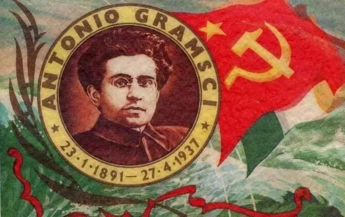

Publication d’archives
27 avril 1937 - Décès d'Antonio Gramsci philosophe et théoricien du communisme.
Date indiquée par Facebook · 27 avril 2023
Texte conservé avec la publication
Contexte du dossier
Le 21 février 2023, la fédération rappelle les vingt-deux FTP-MOI fusillés au Mont-Valérien en 1944 et Olga Bancic, exécutée séparément le 10 mai. Elle soutient l’entrée de Missak Manouchian au Panthéon : l’ouvrier et poète arménien donne un visage au rôle des immigrés dans la libération de la France. Un lien mis à jour le 19 avril rend hommage au soulèvement du ghetto de Varsovie, aux combattants et aux victimes de la Shoah, en opposant justice et solidarité aux idéologies de haine. Le 27, une légende rappelle la mort de Gramsci en 1937 et son emprisonnement par le fascisme. Le dossier conserve ces références comme des usages militants de la mémoire, sans ajouter le contenu des vidéos liées.

Sources
Archive rouge · export Facebook · AR-0002-FB-01675
À lire aussi · Missak Manouchian : Un communiste, poète et ouvrier entrera au Panthéon pour l’éternité, le 21 février 2024